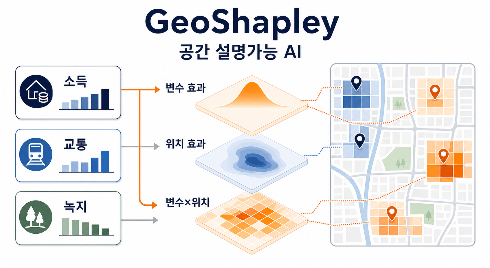
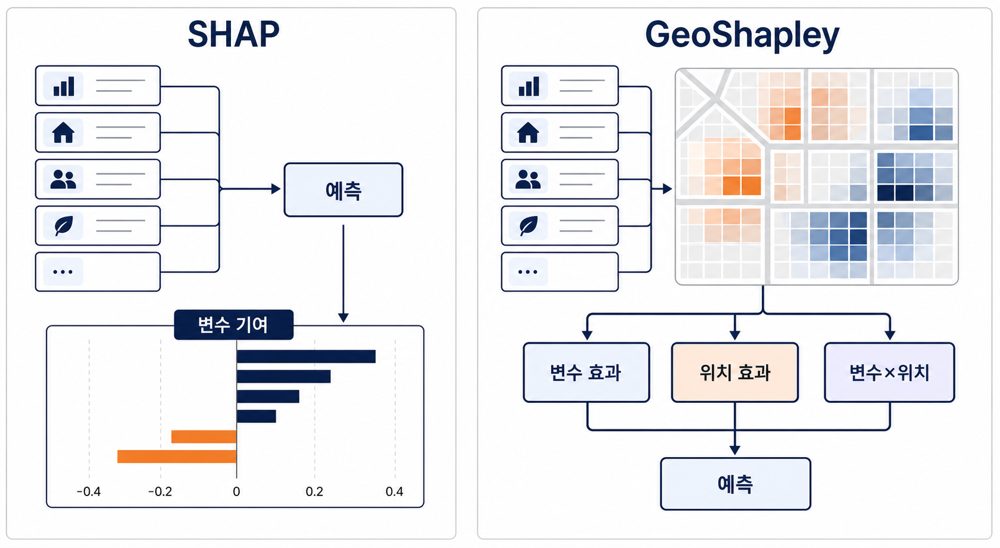

SHAP은 무엇을 말하지만, GeoShapley는 어디서를 묻는다

같은 인구밀도라도 서울 도심의 인구밀도와 외곽 주거지의 인구밀도는 같은 뜻이 아니다. 숫자는 같아도 주변 맥락이 다르고, 접근성이 다르고, 토지이용의 조합이 다르다. 도시 데이터를 다룰 때 모델 해석이 어려워지는 지점은 여기서 시작한다.
머신러닝 모델에 SHAP을 붙이면 “어떤 변수가 예측에 얼마나 기여했는가”를 볼 수 있다. 인구밀도, 녹지, POI, 도로 접근성, 건축물 밀도 같은 변수가 결과에 어느 방향으로 작용했는지 설명할 수 있다. 이것만으로도 유용하다.
그런데 도시 문제에서는 질문이 하나 더 남는다.
“그 효과가 어디에서 그렇게 나타났는가?”
일반 SHAP은 이 질문에 직접 답하기 어렵다. 좌표를 변수로 넣으면 위치 정보도 모델에 들어가긴 한다. 하지만 그 경우에도 위치 자체가 만든 효과와, 특정 변수가 특정 위치에서 다르게 작동한 효과를 깔끔하게 나눠 보기 어렵다.
GeoShapley는 이 틈을 겨냥한다. 일반 SHAP이 “무엇이 중요한가”를 묻는다면, GeoShapley는 “그 중요성이 어디에서 어떻게 달라지는가”를 묻는다.
GeoShapley가 더하는 질문
GeoShapley는 Ziqi Li가 2024년 Annals of the American Association of Geographers에 발표한 방법이다. 논문 제목은 “GeoShapley: A Game Theory Approach to Measuring Spatial Effects in Machine Learning Models”이며, DOI는 10.1080/24694452.2024.2350982다. 공식 구현은 GitHub의 Ziqi-Li/geoshapley 저장소와 PyPI 패키지 geoshapley로 공개되어 있다.
이름 때문에 헷갈리기 쉽지만 GeoShapley는 파이썬 geometry 라이브러리 Shapely와 관련된 도구가 아니다. 여기서 Shapley는 협력 게임 이론의 Shapley value를 뜻한다. SHAP이 Shapley value를 모델 설명에 쓰는 것처럼, GeoShapley도 Kernel SHAP 계열의 아이디어를 공간 효과 해석 쪽으로 확장한다.
핵심은 예측값에 대한 설명을 세 덩어리로 나눠 읽는 것이다.
| 구분 | 읽는 질문 | 도시 데이터 예시 |
|---|---|---|
| 변수 자체 효과 | 어떤 변수가 예측에 기여했나 | 인구밀도 자체가 예측값에 미친 평균적 기여 |
| 위치 자체 효과 | 위치가 독립적인 신호로 쓰였나 | 좌표나 공간적 위치가 가진 설명력 |
| 변수×위치 상호작용 효과 | 변수 효과가 위치에 따라 달라졌나 | 인구밀도가 특정 지역에서는 강하게, 다른 지역에서는 약하게 작동하는 패턴 |
세 번째 항이 특히 중요하다. 도시 데이터에서 변수의 의미는 공간적으로 고정되어 있지 않다. 녹지가 어떤 지역에서는 쾌적성의 신호일 수 있지만, 다른 지역에서는 개발 압력이나 접근성 부족과 함께 읽힐 수 있다. 상업시설 밀도도 중심지, 주거지, 산업지 주변에서 같은 의미를 갖지 않는다.

GeoShapley는 이런 차이를 “모델이 실제로 예측에 사용한 신호”의 관점에서 분해한다.
왜 일반 SHAP만으로는 부족할 수 있나
일반 SHAP은 변수별 기여도를 보여준다. 예를 들어 도시 기능 충돌, 임대료, 보행량, 열섬, 상권 활성도 같은 값을 예측하는 모델이 있다고 하자. SHAP 결과에서 인구밀도가 높게 나오면 우리는 인구밀도가 중요한 변수라고 말할 수 있다.
하지만 그 다음 질문이 남는다.
- 인구밀도는 모든 지역에서 같은 방향으로 작용했나?
- 특정 위치의 맥락 때문에 인구밀도의 효과가 달라졌나?
- 좌표 자체가 미관측 공간 요인을 대신하고 있지는 않나?
- 변수 효과라고 읽은 것 중 일부가 위치 효과와 섞여 있지는 않나?
도시 연구에서는 이 질문들이 꽤 치명적이다. 공간 데이터는 독립적인 표본들의 단순한 묶음이 아니다. 가까운 곳끼리 닮고, 행정구역이나 격자 크기에 따라 패턴이 달라지며, 관측하지 못한 지역 맥락이 좌표에 묻어 들어간다.
그래서 “인구밀도가 중요하다”는 말은 종종 부족하다. 더 필요한 문장은 이것이다.
“인구밀도는 어디에서, 어떤 위치 맥락과 결합할 때, 예측에 다르게 기여했는가.”
GeoShapley는 이 문장을 모델 해석 결과로 만들기 위한 방법에 가깝다.
도시 AI 모델에서는 무엇이 달라지나
한국 도시 연구에서 GeoShapley가 흥미로운 이유는 데이터 구조 때문이다. 우리는 100m 또는 250m 격자, 생활인구, POI, 교통 접근성, 상권, 녹지, 공시가격, 건축물, 유동인구 같은 공간 데이터를 자주 쓴다. 이 변수들은 거의 항상 위치와 엮여 있다.
같은 POI 밀도라도 강남역 주변, 대학가, 노후 주거지, 산업단지 주변에서 의미가 다르다. 같은 녹지 비율도 고밀 도심의 작은 녹지와 저밀 외곽의 넓은 녹지는 다른 신호일 수 있다. 같은 교통 접근성도 중심지에서는 혼잡과 함께 읽히고, 외곽에서는 연결성의 개선으로 읽힐 수 있다.
이때 GeoShapley식 해석은 다음 작업에 잘 맞는다.
- 격자 기반 예측 모델에서 변수 효과와 위치 효과를 분리해 보기
- 특정 변수의 효과가 강하게 나타나는 공간 클러스터를 찾기
- 모델이 좌표를 통해 흡수한 지역 맥락을 점검하기
- SHAP dependence plot만으로 설명하기 어려운 공간적 이질성을 보완하기
- 예측 모델 결과를 지도 기반 해석과 연결하기
도시 AI 모델을 설명할 때 중요한 것은 “정확도가 높다”는 말만으로 끝내지 않는 것이다. 모델이 어떤 공간 신호를 사용했는지, 그 신호가 어느 지역에서 강했는지, 그리고 그 해석을 어디까지 믿을 수 있는지까지 같이 봐야 한다.
실무적으로 읽는 법
GeoShapley 결과를 읽을 때는 세 가지를 구분하면 좋다.
첫째, 변수 자체 효과는 기존 SHAP에 가까운 질문이다. 어떤 변수가 예측에 기여했는가를 본다.
둘째, 위치 자체 효과는 관측 변수로 다 설명되지 않는 공간 맥락을 의심하게 만든다. 이 값이 크다면 모델이 좌표 또는 위치 정보를 강한 신호로 쓰고 있다는 뜻일 수 있다. 이때는 누락 변수, 행정구역 효과, 중심지-외곽 구조, 공간 자기상관을 함께 점검해야 한다.
셋째, 변수와 위치의 상호작용 효과는 도시 연구자가 가장 흥미롭게 볼 부분이다. 같은 변수가 어디에서는 강하게, 어디에서는 약하게 작동한다면 그 차이를 지도, 지역 유형, 토지이용 맥락과 함께 읽어야 한다.
이 세 가지를 나눠 보면 모델 해석의 문장이 달라진다.
“인구밀도가 중요하다”가 아니라, “인구밀도는 특정 공간 맥락에서 더 강한 예측 신호로 작동했다”고 말할 수 있다. 이것이 훨씬 조심스럽고, 동시에 도시적으로 더 유용한 문장이다.
과하게 읽지 않기
GeoShapley는 강력한 설명 도구지만, 인과 식별 도구는 아니다. 모델이 어떤 패턴을 사용했다는 사실과, 그 변수가 실제 도시 현상을 발생시켰다는 주장은 다르다. 더 안전한 표현은 “모델이 이 변수와 위치 정보를 이런 방식의 예측 신호로 사용했다”에 가깝다.
위치 효과도 그 자체로 결론은 아니다. 위치는 많은 누락 변수를 압축한 대리 신호일 수 있다. 소득, 토지이용, 정책 이력, 개발 연한, 접근성, 행정구역 효과가 좌표에 묻어 있을 수 있다.
공간 단위에도 민감하다. 100m 격자에서 보이는 패턴이 500m 격자나 행정동 단위에서도 유지되는지 확인해야 한다. 도시 데이터에서는 MAUP 문제가 항상 따라온다.
마지막으로 시각화는 해석을 과장할 수 있다. 지도 위에 색이 칠해지면 그럴듯해 보이지만, 색의 경계가 실제 정책 경계나 현장 경계를 뜻하는 것은 아니다.
자주 묻는 질문
GeoShapley는 Shapely 라이브러리와 같은 건가?
아니다. 이름은 비슷하지만 GeoShapley는 geometry 라이브러리 Shapely가 아니라 Shapley value 기반 모델 설명 방법과 관련된다.
GeoShapley는 인과 효과를 설명하나?
아니다. GeoShapley는 예측 모델이 사용한 변수와 위치 신호를 설명하는 방법이다. 인과 효과를 주장하려면 별도의 연구 설계가 필요하다.
일반 SHAP과 가장 큰 차이는 무엇인가?
일반 SHAP은 변수별 예측 기여를 보는 데 초점이 있다. GeoShapley는 여기에 위치 효과와 변수×위치 상호작용 효과를 분리해 보는 관점을 더한다.
도시 연구에서 어디에 쓸 수 있나?
격자 기반 도시 예측, 상권·보행량·열섬·도시 기능 충돌·접근성 모델처럼 변수 효과가 위치에 따라 달라질 가능성이 큰 문제에 보조 해석 도구로 쓸 수 있다.
정리
GeoShapley의 가치는 SHAP을 대체하는 데 있지 않다. SHAP이 던지는 질문을 도시 데이터에 맞게 한 번 더 쪼개는 데 있다.
일반 SHAP이 “무엇이 중요한가”를 묻는다면, GeoShapley는 “그 중요성이 어디에서 어떻게 달라지는가”를 묻는다. 도시 AI 모델을 해석할 때 이 차이는 작지 않다. 도시는 변수의 평균 효과보다 위치 속에서 달라지는 의미가 더 중요한 경우가 많기 때문이다.
그래서 GeoShapley를 읽는 가장 안전한 문장은 이것이다.
“이 변수는 예측에 중요했다”가 아니라, “이 변수는 특정 위치 맥락에서 이런 방식의 예측 신호로 작동했다.”
공간 XAI가 답해야 할 질문도 결국 여기에 가깝다. what matters가 아니라, what matters where.
Source note
- Li, Ziqi. 2024. “GeoShapley: A Game Theory Approach to Measuring Spatial Effects in Machine Learning Models.” Annals of the American Association of Geographers. DOI: 10.1080/24694452.2024.2350982.
- Official implementation: https://github.com/Ziqi-Li/geoshapley
- PyPI package: https://pypi.org/project/geoshapley/